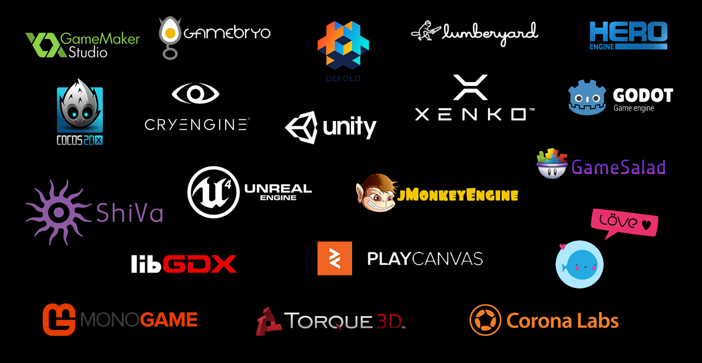

Game Engines
A game engine is software that helps developers build games more easily. It provides tools for graphics, physics, sound, and input. Popular game engines like Unity and Unreal Engine allow developers to focus more on creating the game instead of building everything from scratch.
